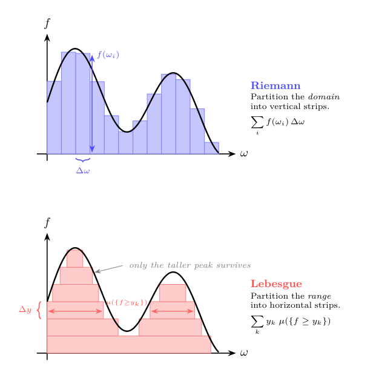
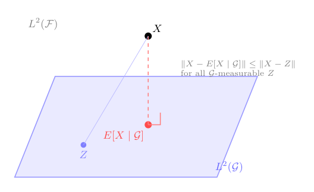
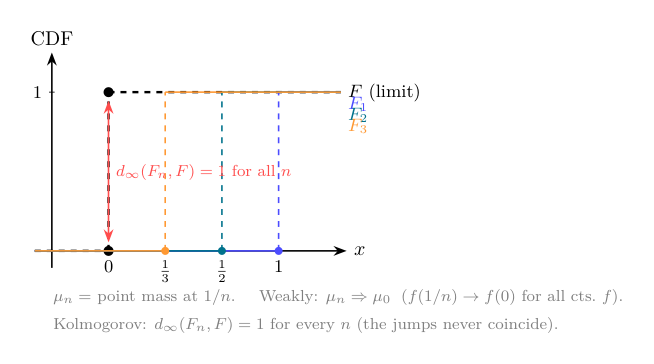

Topic 14: Measurability and Integration
(Giving \(\int f\, d\mu\) a rigorous home)
1. Why measure theory enters now
In Topic 8, we introduced probability informally. A random variable was a function \(X: \Omega \to \mathbb{R}\), a distribution assigned probabilities to values of \(X\), and expectation was a weighted average: \[\mathbb{E}[X] = \sum_{i} p_i x_i \quad \text{(discrete)}, \qquad \mathbb{E}[X] = \int x\, f(x)\, dx \quad \text{(continuous)}.\] That was enough for auctions, Bayesian updating, and mixed strategies in finite games.
But two things have since changed. In Topic 13, the integral \(\int f\, d\mu\) appeared—in the definition of the \(d_1\) metric on function spaces and in the preview of weak convergence—and was explicitly deferred: “we develop this in Topic 14.” And the applications that Topic 13 could not finish—weak convergence of probability measures, Prokhorov’s theorem, compactness of the space of distributions \(\Delta(\Theta)\), and Bayesian Nash equilibrium existence for infinite type spaces—all require that we know what it means to integrate a function against a measure that is neither a finite sum nor something with a density.
The goal of this topic is narrow. Here is what we want to do:
- give \(\int f\, d\mu\) a precise meaning,
- state the convergence theorems (dominated convergence, Fatou’s lemma) that let us pass limits through integrals,
- connect conditional expectation back to Topic 8 in a way that generalizes beyond finite state spaces,
- define weak convergence and state Prokhorov’s theorem,
- close the two applications deferred from Topic 13.
We do not need the full machinery of a real analysis course. We will not construct Lebesgue measure on \(\mathbb{R}\) from scratch, and we will not prove dominated convergence in full detail. The point is to make the key objects precise and the key results usable, so that the microeconomic applications rest on solid ground—for more, you’ll have to hope for the best in the probability theory part of the PhD sequence.
2. Sigma-algebras: which subsets can we measure?
In Topic 8, we said that a probability assigns numbers to events, where an event is a subset of the state space \(\Omega\). But we were vague about which subsets. For finite \(\Omega\), this is harmless: every subset is an event. For uncountable \(\Omega\)—a type space \([0,1]\), or \(\mathbb{R}^n\)—not every subset can be assigned a probability in a coherent way.1
To solve this, we need to specify in advance which subsets we will measure. This collection is called a sigma-algebra (or \(\sigma\)-algebra).
Definition. A \(\sigma\)-algebra on a set \(\Omega\) is a collection \(\mathcal{F}\) of subsets of \(\Omega\) satisfying:
- \(\Omega \in \mathcal{F}\) (the whole space is measurable),
- if \(A \in \mathcal{F}\), then \(A^c \in \mathcal{F}\) (complements of measurable sets are measurable),
- if \(A_1, A_2, \ldots \in \mathcal{F}\), then \(\bigcup_{n=1}^\infty A_n \in \mathcal{F}\) (countable unions of measurable sets are measurable).
“A \(\sigma\)-algebra tells us what classifies as an event within our set \(\Omega\).”
The pair \((\Omega, \mathcal{F})\) is called a measurable space.
Why these three properties?
Property 1 says we can always ask “did something happen?” Property 2 says that if we can ask “did \(A\) happen?” then we can also ask “did \(A\) not happen?” Property 3 says we can ask “did at least one of \(A_1, A_2, \ldots\) happen?” Combined with property 2, this also gives us countable intersections (by De Morgan’s laws).2 So the collection is closed under all the set operations we would ever need.3
The leading example: the Borel \(\sigma\)-algebra
On \(\mathbb{R}\) (or \(\mathbb{R}^n\)), the most important \(\sigma\)-algebra is the Borel \(\sigma\)-algebra \(\mathcal{B}(\mathbb{R})\). It is the smallest \(\sigma\)-algebra containing all open sets. It is easy to generate: start with taking all open intervals \((a,b)\) and include \(\emptyset\) (which is open). Then include complements and countable unions. The result contains all open sets, all closed sets, all countable unions of closed sets, and so on.
For a compact metric space \(\Theta\) (the typical type space in mechanism design), the Borel \(\sigma\)-algebra \(\mathcal{B}(\Theta)\) is generated by the open sets of the metric topology. This is the \(\sigma\)-algebra we will always use.
Two trivial \(\sigma\)-algebras
The smallest \(\sigma\)-algebra on \(\Omega\) is \(\{\emptyset, \Omega\}\)—we can only ask whether “something” or “nothing” happened. The largest is \(2^\Omega\), the power set — every subset is measurable. For finite \(\Omega\), the power set is the natural choice and recovers the informal setting of Topic 8. For uncountable \(\Omega\), we typically work with the Borel \(\sigma\)-algebra, which sits strictly between these two extremes.
Connection to topologies
In Topic 13 we introduced a topology \(\tau\) on \(\Omega\): a collection of subsets (called “open”) satisfying three axioms (\(\emptyset\) and \(\Omega\) belong, arbitrary unions stay in, finite intersections stay in). A \(\sigma\)-algebra \(\mathcal{F}\) is also a collection of subsets satisfying three axioms. The two structures look similar, and it is worth being precise about how they differ.
| Topology \(\tau\) | \(\sigma\)-algebra \(\mathcal{F}\) | |
|---|---|---|
| Contains \(\Omega\) | yes | yes |
| Closed under complements | no | yes |
| Closed under unions | arbitrary (even uncountable) | countable |
| Closed under intersections | finite only | countable (via complements) |
The key differences are two. First, a \(\sigma\)-algebra is closed under complements; a topology is not—the complement of an open set is closed, not open. Second, a topology allows arbitrary (uncountable) unions but restricts to finite intersections, while a \(\sigma\)-algebra restricts both to countable operations.
The reason for the difference is the job each structure does. A topology is designed for continuity and convergence: it defines “nearness.” A \(\sigma\)-algebra is designed for measurement: it defines which sets can be assigned a size. The two tasks impose different closure requirements.
They are connected by the Borel construction. Given a topology \(\tau\) on \(\Omega\), the Borel \(\sigma\)-algebra \(\mathcal{B}(\Omega)\) is the smallest \(\sigma\)-algebra containing every set in \(\tau\). It starts from the open sets and then closes under complements and countable unions, adding closed sets, countable intersections of open sets, and so on. In symbols: \(\tau \subseteq \mathcal{B}(\Omega)\), but typically \(\mathcal{B}(\Omega)\) is strictly larger than \(\tau\). So the topology generates the \(\sigma\)-algebra, but the two are not the same collection of sets.
For the compact metric spaces in this course, the Borel \(\sigma\)-algebra is the right choice: it is rich enough to measure all the sets we care about (open, closed, their countable combinations) and compatible with the topology we use for continuity arguments.
Why not just use the power set?
Since the power set \(2^\Omega\) is the largest \(\sigma\)-algebra, one might ask: why not declare every subset measurable and avoid the whole issue?
For finite \(\Omega\), that works — and it is what we did implicitly in Topic 8. But for uncountable \(\Omega\) like \([0,1]\), the power set is too large. As the footnote in §2 explained, no measure on \(2^{[0,1]}\) can simultaneously assign intervals their natural length, respect countable additivity, and be translation-invariant. The Vitali-type sets that cause the contradiction are deeply pathological — they require the axiom of choice to construct and have no economic interpretation.
The Borel \(\sigma\)-algebra avoids the problem by starting from the topology (the open sets we already know are well-behaved) and closing under the operations we need (complements, countable unions). The resulting collection \(\mathcal{B}(\Omega)\) sits between the two extremes: \(\tau \subseteq \mathcal{B}(\Omega) \subsetneq 2^\Omega\). It is large enough to contain every set an economist would write down — intervals, level sets of continuous functions, countable unions and intersections of these — but small enough that measures on it are well-defined and well-behaved.
3. Measures and probability measures
A \(\sigma\)-algebra says which sets are measurable. A measure assigns sizes to those sets.
Definition. A measure on a measurable space \((\Omega, \mathcal{F})\) is a function \(\mu: \mathcal{F} \to [0, \infty]\) satisfying:
- \(\mu(\emptyset) = 0\) (the empty set has size zero),
- if \(A_1, A_2, \ldots \in \mathcal{F}\) are pairwise disjoint, then \[\mu\!\left(\bigcup_{n=1}^\infty A_n\right) = \sum_{n=1}^\infty \mu(A_n)\] (countable additivity).
The triple \((\Omega, \mathcal{F}, \mu)\) is called a measure space.
The measure is pretty intuitive; it only says the following:
“A measure is a way of assigning sizes to sets that respects basic algebra: the size of a disjoint union is the sum of the sizes.”
Probability measures
There are several types of measures. But the most relevant for us is the probability measure. Here is the definition:
A measure \(\mu\) is a probability measure if \(\mu(\Omega) = 1\).
In that case, \(\mu(A)\) is the probability of the event \(A\), and we recover the Kolmogorov axioms from Topic 8—except now we have countable additivity rather than just finite additivity, and the events are required to come from a \(\sigma\)-algebra.
The notation \(\Pr\) or \(P\) from Topic 8 is just a probability measure in the present language. The upgrade is that we now know precisely which sets \(\Pr\) is defined on (namely, the sets in \(\mathcal{F}\)), and the additivity extends to countable collections.
Why countable additivity?
Finite additivity—\(\mu(A \cup B) = \mu(A) + \mu(B)\) when \(A \cap B = \emptyset\)—was all we needed in Topic 8’s discrete setting. But limits require countable additivity. If \(A_n \uparrow A\) (i.e., \(A_1 \subseteq A_2 \subseteq \cdots\) and \(A = \bigcup_n A_n\)), then countable additivity implies \(\mu(A_n) \to \mu(A)\). Without this, we could not take limits of probabilities, and convergence theorems for integrals would fail.4
Three examples that cover the course
Counting measure on a finite set. Let \(\Omega = \{1, \ldots, n\}\), \(\mathcal{F} = 2^\Omega\), and \(\mu(\{i\}) = p_i\) with \(\sum p_i = 1\). This is the discrete distribution from Topic 8. Integration against \(\mu\) is summation: \(\int f\, d\mu = \sum_i p_i f(i)\).
Lebesgue measure on \([0,1]\). The unique measure on \(\mathcal{B}([0,1])\) with \(\mu([a,b]) = b - a\) for every subinterval. This is “length.” A continuous distribution with density \(g\) on \([0,1]\) has \(\mu(A) = \int_A g(x)\, dx\)—a probability measure that is absolutely continuous with respect to Lebesgue measure.
Point mass (Dirac measure). For a fixed \(\theta_0 \in \Theta\), define \(\delta_{\theta_0}(A) = 1\) if \(\theta_0 \in A\) and \(0\) otherwise. This is a probability measure concentrated at a single point. It will appear repeatedly in the weak-convergence section.
4. Measurable functions: which functions can we integrate?
In Topic 8, a random variable was any function \(X: \Omega \to \mathbb{R}\). When \(\Omega\) is finite, every such function is fine. For general \(\Omega\), we need a compatibility condition between the function and the \(\sigma\)-algebra.
Definition. A function \(f: (\Omega, \mathcal{F}) \to (\mathbb{R}, \mathcal{B}(\mathbb{R}))\) is measurable (or \(\mathcal{F}\)-measurable) if for every Borel set \(B \in \mathcal{B}(\mathbb{R})\), \[f^{-1}(B) = \{\omega \in \Omega : f(\omega) \in B\} \in \mathcal{F}.\]
“A function is measurable if pulling back any ‘reasonable’ subset of \(\mathbb{R}\) lands in the \(\sigma\)-algebra. Equivalently: for every real number \(c\), the set \(\{\omega : f(\omega) \leq c\}\) is in \(\mathcal{F}\).”
The second phrasing — checking only the sets \(\{f \leq c\}\) — is equivalent because these sets generate the Borel \(\sigma\)-algebra.5
A concrete example
Think of a bidder whose valuation depends on an underlying state \(\omega \in [0,1]\), with \(v(\omega) = \omega^2\). The question “what is the probability that the valuation is at most \(1/2\)?” amounts to computing \(\mu(\{v \leq 1/2\})\). Now, \(\{v \leq 1/2\} = \{\omega : \omega^2 \leq 1/2\} = [0, 1/\sqrt{2}]\). This is a closed interval, hence a Borel set, hence in \(\mathcal{B}([0,1])\), so the measure can evaluate it. That is measurability at work for the threshold \(c = 1/2\).
Measurability says this works not just for \(c = 1/2\) but for every threshold \(c\). For the function \(v(\omega) = \omega^2\), the set \(\{v \leq c\}\) is always an interval \([0, \sqrt{c}]\) (for \(c \in [0,1]\)), and intervals are always Borel sets. So \(v\) is measurable. Any continuous function has this property: the preimage of a “nice” set in \(\mathbb{R}\) (an interval, or anything built from intervals by countable operations) is a “nice” set in \(\Omega\) — and “nice” here means “belongs to the Borel \(\sigma\)-algebra.”
Why measurability matters
The point is simple: to compute \(\mu(\{f \leq c\})\) — the probability that \(f\) is no larger than \(c\) — the set \(\{f \leq c\}\) must be in \(\mathcal{F}\), or the measure \(\mu\) has nothing to say about it. Measurability is the condition that makes this work for every threshold \(c\).
In the finite-\(\Omega\) setting of Topic 8, every function is measurable with respect to the power set \(2^\Omega\), which is why we never needed the concept. For uncountable spaces, measurability is automatic for every function you will encounter in (most of) economics—continuous functions are measurable, monotone functions are measurable, limits of measurable functions are measurable—so the concept is a safeguard, not a restriction.6
A random variable, upgraded
A random variable in the measure-theoretic sense is a measurable function \(X: (\Omega, \mathcal{F}) \to (\mathbb{R}, \mathcal{B}(\mathbb{R}))\). This definition is interesting, because the condition does not rely on the definition of a probability measure—we could define RVs also in other types of measures (those that do not sum to \(1\)).
Of course, the CDF \(F(c) = \mu(\{X \leq c\})\) is well-defined precisely because measurability guarantees \(\{X \leq c\} \in \mathcal{F}\), so \(\mu\) can evaluate it. This is the same CDF from Topic 8, now on rigorous footing.
5. The Lebesgue integral: motivation and construction
We now have a measure space \((\Omega, \mathcal{F}, \mu)\) and a measurable function \(f: \Omega \to \mathbb{R}\). The question is: what does \(\int f\, d\mu\) mean?
What is wrong with the Riemann integral?
The integral from calculus (the Riemann integral)—partition the \(x\)-axis into small intervals, form upper and lower sums, check that they converge—works well for continuous functions on \([a,b]\). But it has limitations that matter for probability:
The domain must look like an interval. The Riemann integral partitions the \(x\)-axis into small subintervals. If \(\Omega\) is an abstract set (a type space, a set of strategies), there are no intervals to partition, and the construction does not get off the ground.
Limits behave badly. Take a sequence of functions that the Riemann integral can handle, and let them converge pointwise. The limit need not be Riemann-integrable.7 This makes limit theorems — precisely the tools we need for passing limits through expected payoffs — unreliable in the Riemann framework.
It only works with densities. The Riemann integral \(\int f(x)\, g(x)\, dx\) requires a density function \(g\). But many probability measures do not have densities: a point mass \(\delta_{\theta_0}\) concentrates all its weight at a single point, and a mixture of a continuous and a discrete distribution (say, “with probability \(1/2\) the type is drawn uniformly from \([0,1]\), and with probability \(1/2\) the type is exactly \(\theta_0\)”) has no density at all. The Riemann framework has no natural way to write \(\int f\, d\mu\) for such measures.
The Lebesgue integral solves all three problems by building the integral from the measure directly.
The idea: partition the range, not the domain
The Riemann integral chops up the domain into small intervals and asks how the function behaves on each interval. The Lebesgue integral does the opposite: it chops up the range of \(f\) into small intervals \([y_k, y_{k+1})\) and asks how much of the domain lands in each range-slice.
More precisely, the “amount of domain” where \(f\) takes values in \([y_k, y_{k+1})\) is \(\mu(\{y_k \leq f < y_{k+1}\})\). This is where the measure enters. The approximate integral is \[\sum_k y_k \cdot \mu(\{y_k \leq f < y_{k+1}\}).\] As the partition of the range gets finer, this sum converges to \(\int f\, d\mu\).
“The Riemann integral asks: on each small piece of the domain, what value does \(f\) take? The Lebesgue integral asks: for each small range of values, how much of the domain does \(f\) occupy? The second question makes sense on any measure space, not just on intervals of \(\mathbb{R}\).”

The construction: from the simplest case to the general one
We want to define \(\int f\, d\mu\) for every measurable function \(f\). But we cannot do this in one shot: the whole point of the Lebesgue integral is that it works on abstract spaces where there is no “partition the \(x\)-axis into intervals” trick available. So we need a different strategy.
The idea is to start from the one case where the answer is completely obvious, and then extend, step by step, to larger and larger classes of functions. Each step defines the integral for a new class using only what the previous step already established. By the end, we reach all measurable functions.
Step 1: Indicator functions — the seed. An indicator function \(\mathbf{1}_{A}(\omega)\) equals \(1\) if \(\omega \in A\) and \(0\) elsewhere.8 There is only one reasonable answer for its integral: the “area under the curve” of a function that is \(1\) on \(A\) and \(0\) everywhere else should be the size of \(A\). So we define \[\int \mathbf{1}_A\, d\mu = \mu(A).\] This is where the measure enters the integral. Everything that follows is built on this single equation.
Step 2: Simple functions — finite sums of indicators. A simple function takes finitely many values: \[s = \sum_{k=1}^n c_k \, \mathbf{1}_{A_k},\] where \(c_k \geq 0\) and \(A_k \in \mathcal{F}\). Think of it as a staircase: the function is constant on each piece \(A_k\), and it jumps between the levels \(c_1, \ldots, c_n\). The integral should be the weighted sum of these levels, weighted by the measure of each piece. So we define \[\int s\, d\mu = \sum_{k=1}^n c_k \, \mu(A_k).\] This is just linearity applied to Step 1. Nothing new is assumed; we are using the indicator integral \(n\) times and adding up.
Step 3: Nonnegative measurable functions — approximation from below. Now the key step. A general nonnegative measurable function \(f \geq 0\) is not a staircase — it takes infinitely many values, possibly a continuum. But we can approximate it from below by simple functions: chop the range into finer and finer levels, and at each resolution, round \(f\) down to the nearest level. This produces a sequence of staircases \(s_1 \leq s_2 \leq \cdots\) that climb toward \(f\) from below.9 Since each \(s_n\) is a simple function, we already know \(\int s_n\, d\mu\) from Step 2. As the staircase gets finer, these integrals increase (more of \(f\) is captured). The integral of \(f\) is the limit: \[\int f\, d\mu = \sup\left\{\int s\, d\mu : s \text{ simple}, \; 0 \leq s \leq f\right\}.\] This is where the range-partitioning picture from above connects to the formal construction: each staircase approximation corresponds to a particular partition of the range.
Step 4: General measurable functions — handling signs. The previous step required \(f \geq 0\). For a function that can take negative values, we split it into its positive and negative parts: \(f = f^+ - f^-\), where \(f^+(\omega) = \max(f(\omega), 0)\) and \(f^-(\omega) = \max(-f(\omega), 0)\). Both are nonnegative, so Step 3 handles each one. Define \[\int f\, d\mu = \int f^+\, d\mu - \int f^-\, d\mu,\] provided at least one of these is finite. If both are finite, we say \(f\) is integrable (or \(\mu\)-integrable).
The chain is now complete: indicator → simple → nonneg → general. Each step used only the previous one. And the only external input was the measure \(\mu\), which entered once, in Step 1.
Recovering the familiar cases
When \(\Omega = \{1, \ldots, n\}\) with \(\mu(\{i\}) = p_i\), \[\int f\, d\mu = \sum_{i=1}^n p_i \, f(i) = \mathbb{E}[f(X)]\] where \(X\) is the identity random variable. This is the discrete expectation from Topic 8.
When \(\Omega = \mathbb{R}\) with \(d\mu = g(x)\, dx\) for a density \(g\), \[\int f\, d\mu = \int_{-\infty}^\infty f(x)\, g(x)\, dx,\] which is the continuous expectation from Topic 8 (and coincides with the Riemann integral when \(f\) and \(g\) are well-behaved).
When \(\mu = \delta_{\theta_0}\) is a point mass, we can trace the construction to see what happens. Start with an indicator: \(\int \mathbf{1}_A\, d\delta_{\theta_0} = \delta_{\theta_0}(A)\), which is \(1\) if \(\theta_0 \in A\) and \(0\) if not. In other words, \(\int \mathbf{1}_A\, d\delta_{\theta_0} = \mathbf{1}_A(\theta_0)\). Now extend to simple functions: if \(s = \sum_k c_k \mathbf{1}_{A_k}\), then \(\int s\, d\delta_{\theta_0} = \sum_k c_k \, \delta_{\theta_0}(A_k) = \sum_k c_k \, \mathbf{1}_{A_k}(\theta_0) = s(\theta_0)\). Finally, since every measurable \(f\) is a limit of simple functions and the integral passes through the limit, we get \[\int f\, d\delta_{\theta_0} = f(\theta_0).\]
“Integrating any function against a point mass simply evaluates the function at that point.”
This will be important in §10 when we verify that weak convergence works correctly for sequences of point masses.
So the Lebesgue integral unifies summation, Riemann integration, and evaluation at a point under a single notation: \(\int f\, d\mu\). The measure \(\mu\) tells you which one you are doing.
6. Key properties of the integral
Operationally, the Lebesgue integral can be treated like the Riemann integral. All operations carry over. In particular:
Linearity. For measurable \(f, g\) and constants \(a, b\), \[\int (af + bg)\, d\mu = a \int f\, d\mu + b \int g\, d\mu.\] This is linearity of expectation (Topic 8) in its general form.
Monotonicity. If \(f \leq g\) \(\mu\)-almost everywhere, then \(\int f\, d\mu \leq \int g\, d\mu\).
Absolute integrability. \(f\) is integrable if and only if \(\int |f|\, d\mu < \infty\).
These properties follow directly from the construction: they hold for simple functions by finite arithmetic, and they extend to general functions by taking limits.
A difference, if you like, is:
\[\int_{\mathbb{Q} \cap [0,1]} 1 \, \mathrm{d} \mu=0\] under Lebesgue integration (using the usual Borel \(\sigma\)-algebra), whereas a Riemann integral to express this notion does not exist.
So Lebesgue integration is conceptually new (and appropriate here); but once there is an integral, we can treat it just like the familiar Riemann integral from high school. We now turn to why and when Lebesgue integration is useful for us.
7. Convergence theorems: passing limits through integrals
The real payoff of the Lebesgue integral is not the integral itself—it is the convergence theorems it allows us to derive. Limits are important in economics. They matter to cleanly understand
- thinking on the margin,
- (approximate) optimality,
- benchmark cases,
- existence conditions for equilibria.
In short, we constantly need to evaluate limits of expected payoffs, exchange the order of limits and expectations, or argue that a sequence of value functions converges to the right limit. The convergence theorems tell us when \(\lim_n \int f_n\, d\mu = \int \lim_n f_n\, d\mu\).
This exchange is not automatic. Consider the set of functions \(f_n = n \cdot \mathbf{1}_{(0, 1/n]}\) on \([0,1]\) for \(n \in \mathbb{N}\). Each \(f_n\) is nonnegative by construction and \(\int f_n\, d\mu = n(1/n)= 1\). But for any given \(\omega \in (0,1]\), \(f_n(\omega) \to 0\). Now that means that \(\int \lim_{n \to \infty} f_n\, d\mu = 0 \neq 1 = \lim_{n\to \infty} \int f_n\, d\mu\). The functions spike higher and higher on a shrinking region; the mass “escapes to infinity.” So the measure of the limit does not converge to the limit of the measures.
Monotone Convergence Theorem
We say \(f_n \uparrow f\) pointwise (read converges pointwise monotone) if there is pointwise convergence (that is, for all \(\omega\), \(f_n(\omega)\to f(\omega)\)) and in addition \(f_n(\omega) \leq f_{n+1}(\omega)\) for all \(\omega\) and \(n\).
Theorem (Monotone Convergence, Beppo Levi). Let \(f_n \geq 0\) be measurable and \(f_n \uparrow f\) pointwise. Then \[\int f_n\, d\mu \uparrow \int f\, d\mu.\]
“If a sequence of nonnegative functions increases pointwise to a limit, the integrals increase to the integral of the limit. Monotonicity prevents mass from escaping.”
Proof sketch. Since \(f_n \leq f\), monotonicity of the integral gives \(\int f_n\, d\mu \leq \int f\, d\mu\), so \(\lim \int f_n\, d\mu \leq \int f\, d\mu\). For the reverse inequality: for any simple \(s \leq f\) and any \(c < 1\), the sets \(A_n = \{f_n \geq cs\}\) increase to \(\Omega\) (because \(f_n \uparrow f \geq s > cs\) wherever \(s > 0\)). So \(\int f_n\, d\mu \geq c \int_{A_n} s\, d\mu\), and as \(n \to \infty\), \(\int_{A_n} s\, d\mu \to \int s\, d\mu\). Taking the supremum over simple \(s \leq f\) gives \(\lim \int f_n\, d\mu \geq c \int f\, d\mu\). Since this holds for all \(c < 1\), we get equality.
Fatou’s Lemma
Theorem (Fatou’s Lemma). Let \(f_n \geq 0\) be measurable. Then \[\int \liminf_{n \to \infty} f_n\, d\mu \leq \liminf_{n \to \infty} \int f_n\, d\mu.\]
“Even without monotonicity, the integral of the pointwise liminf is no larger than the liminf of the integrals. Mass can escape to infinity but cannot appear from nowhere.”
Proof sketch. Define \(g_k = \inf_{n \geq k} f_n\). Then \(g_k \leq f_n\) for all \(n \geq k\), so \(\int g_k\, d\mu \leq \int f_n\, d\mu\) for all \(n \geq k\), hence \(\int g_k\, d\mu \leq \inf_{n \geq k} \int f_n\, d\mu\). Now \(g_k \uparrow \liminf f_n\), so by monotone convergence \(\int g_k\, d\mu \to \int \liminf f_n\, d\mu\). Taking \(k \to \infty\) on the right side gives \(\liminf \int f_n\, d\mu\).
Fatou’s lemma is used whenever a bound suffices and exact convergence is not available. It is the safety net behind many limit arguments in optimization and equilibrium theory.
Dominated Convergence Theorem
Theorem (Dominated Convergence, Lebesgue). Let \(f_n\) be measurable with \(f_n \to f\) pointwise. If there exists an integrable function \(g\) with \(|f_n| \leq g\) for all \(n\), then \[\lim_{n \to \infty} \int f_n\, d\mu = \int f\, d\mu.\]
“If a sequence of functions converges pointwise and is uniformly bounded by an integrable function, then the limit passes through the integral.”
Proof sketch. The functions \(g + f_n \geq 0\) and \(g - f_n \geq 0\). Apply Fatou’s lemma to each: \[\int (g + f)\, d\mu \leq \liminf \int (g + f_n)\, d\mu, \qquad \int (g - f)\, d\mu \leq \liminf \int (g - f_n)\, d\mu.\] Since \(\int g\, d\mu < \infty\), cancel it. The first gives \(\int f\, d\mu \leq \liminf \int f_n\, d\mu\). The second gives \(-\int f\, d\mu \leq \liminf(-\int f_n\, d\mu) = -\limsup \int f_n\, d\mu\), i.e., \(\limsup \int f_n\, d\mu \leq \int f\, d\mu\). Together: \(\lim \int f_n\, d\mu\) exists and equals \(\int f\, d\mu\).
Where each assumption is used:
- Pointwise convergence defines the limit \(f\).
- The dominating function \(g\) prevents the “escaping mass” problem. In the counterexample above (\(f_n = n \cdot \mathbf{1}_{(0,1/n]}\)), no integrable \(g\) dominates all \(f_n\) because their heights grow without bound.
The result is geometrically very intuitive. If there is a cap on how high \(f_n\) can go (given by \(g\)) and \(g\) is integrable (i.e. not disappearing into infinity), then of course \(f_n\) cannot disappear to infinity either. That means laying bricks to approximate the area while not requiring parts of the wall to be infinitely high.
Why economists need dominated convergence
In mechanism design, we often need to show that a functional like expected revenue \(\int_0^1 R(\theta, \mu_n)\, d\theta\) converges to \(\int_0^1 R(\theta, \mu)\, d\theta\) when a sequence of mechanisms (which correspond to distributions over revenues, i.e. measures) converges. If payoffs are bounded — say \(|R| \leq M\) because types and payments live in compact sets — then the constant function \(g = M\) dominates everything, and dominated convergence applies immediately. This is why “bounded payoffs on a compact type space” is the standing assumption throughout mechanism design: it is precisely the condition that makes dominated convergence available.10
Similarly, in continuity arguments for expected utility (Topic 5’s Berge theorem applied to expected payoffs), we need the expected payoff \(\int u(a, \theta)\, d\mu(\theta)\) to be continuous in \(a\) when \(u\) is continuous and bounded. Dominated convergence (with the bound \(M\)) is exactly what delivers this.11
8. Conditional expectation, revisited
In Topic 8, conditional expectation was defined for discrete random variables: \[\mathbb{E}[X \mid Y = y] = \sum_i x_i \, \Pr(X = x_i \mid Y = y).\]
This worked because each event \(\{Y = y\}\) had positive probability. In the continuous case, it has to be that \(\Pr(Y = y) = 0\) for every single \(y\).12 But then, for whatever \(A\) I am looking for, the ratio \(\Pr(A \cap \{Y=y\})/\Pr(Y=y)\) is \(0/0\). So the measure-theoretic definition of conditional expectation needs to make sure to handle this.
The idea: averaging over information
A \(\sigma\)-algebra \(\mathcal{G} \subseteq \mathcal{F}\) represents the information available to the agent. If \(\mathcal{G}\) is coarser than \(\mathcal{F}\) (fewer sets), the agent cannot distinguish states that \(\mathcal{F}\) can distinguish—she has less information.13
The conditional expectation \(\mathbb{E}[X \mid \mathcal{G}]\) is defined as the unique \(\mathcal{G}\)-measurable function14 that satisfies \[\int_G \mathbb{E}[X \mid \mathcal{G}]\, d\mu = \int_G X\, d\mu \qquad \text{for every } G \in \mathcal{G}.\]
“The conditional expectation of \(X\) given \(\mathcal{G}\) is the best \(\mathcal{G}\)-measurable approximation to \(X\): it preserves the integral over every set the agent can observe.”
Why this generalizes Topic 8
When \(\mathcal{G} = \sigma(Y)\) (the \(\sigma\)-algebra generated by \(Y\), i.e., the information revealed by observing \(Y\)), the conditional expectation \(\mathbb{E}[X \mid \mathcal{G}]\) is a function of \(Y\) alone. In the discrete case, this function evaluated at \(Y = y\) recovers \(\mathbb{E}[X \mid Y = y]\) from Topic 8. The law of iterated expectations, \[\mathbb{E}[X] = \mathbb{E}\big[\mathbb{E}[X \mid \mathcal{G}]\big],\] is now a consequence of the defining property: take \(G = \Omega\) in the integral identity.
As in Topic 8, there is the simple interpretation of constraining the set of possibilities: Initially, there was a large set of possible events (the initial \(\sigma\)-algebra). Now, since we know \(Y\), the set of possible events is smaller (this is the information generated by \(Y\)). Now, we make sure that mass actually still integrates to \(1\) over this restricted set.
The projection interpretation
There is another interpretation that is (at first glance) a bit more complicated to describe, but essentially does the same thing. It is useful in applied work, because it is the foundation of regression functions.
If \(X\) is square-integrable (\(\mathbb{E}[X^2] < \infty\)), the conditional expectation \(\mathbb{E}[X \mid \mathcal{G}]\) is the orthogonal projection of \(X\) onto the space of \(\mathcal{G}\)-measurable square-integrable functions. “Orthogonal” means it minimizes the mean-squared error: \[\mathbb{E}[X \mid \mathcal{G}] = \underset{Z \text{ is } \mathcal{G}\text{-measurable}}{\operatorname{argmin}} \; \mathbb{E}\big[(X - Z)^2\big].\]
This is exactly analogous to projection in \(\mathbb{R}^n\): conditional expectation projects onto the subspace of functions that are “knowable” given the information \(\mathcal{G}\), and the projection minimizes the distance.15

9. \(L^p\) spaces (briefly)
The projection interpretation of conditional expectation uses the idea of “distance” between random variables. This is formalized by so-called \(L^p\) spaces.
Definition. For \(p \geq 1\), the space \(L^p(\Omega, \mathcal{F}, \mu)\) is the set of measurable functions \(f\) with \[\|f\|_p := \left(\int |f|^p\, d\mu\right)^{1/p} < \infty.\] Two functions that differ only on a set of measure zero are identified.16
The two most important cases for us:
- \(L^1\): integrable functions. \(\|f\|_1 = \int |f|\, d\mu < \infty\). This is the space of random variables with finite expectation.
- \(L^2\): square-integrable functions. \(\|f\|_2 = (\int |f|^2\, d\mu)^{1/2} < \infty\). This is a Hilbert space17 with inner product \(\langle f, g \rangle = \int fg\, d\mu\), and conditional expectation is an orthogonal projection in this space.
\(L^p\) is a complete metric space under \(\|f - g\|_p\) (this is the Riesz-Fischer theorem). Completeness is what makes the projection in \(L^2\) well-defined: the minimizer exists because the space has no “holes.”
For economics, \(L^2\) matters because it gives a geometric language for conditional expectation, and \(L^1\) matters because dominated convergence says: if \(f_n \to f\) pointwise and \(|f_n| \leq g \in L^1\), then \(f_n \to f\) in \(L^1\) as well (i.e., \(\|f_n - f\|_1 \to 0\)).
10. Weak convergence of probability measures
We now have everything we need to close the loop from Topic 13. Recall the setup: \(\Theta\) is a compact metric space (a type space, a state space) and \(\Delta(\Theta)\) is the set of all Borel probability measures on \(\Theta\). Topic 13 asked: what is the right notion of “two distributions being close”?
Why the Kolmogorov metric fails
The most obvious idea—use the sup distance between CDFs—is the Kolmogorov metric: \[d_\infty(\mu, \nu) = \sup_{x} |F_\mu(x) - F_\nu(x)|.\]
Topic 13 already exhibited the failure. Consider point masses \(\mu_n = \delta_{1/n}\) on \([0,1]\). As \(n \to \infty\), the mass slides toward \(0\), and the “limit” should be \(\delta_0\). But the CDF of \(\delta_{1/n}\) jumps at \(1/n\) and the CDF of \(\delta_0\) jumps at \(0\), so \(d_\infty(\mu_n, \delta_0) = 1\) for every \(n\). The Kolmogorov metric says these distributions are maximally far apart, even though the point masses are converging to \(0\).

The problem is that the Kolmogorov metric demands that CDFs agree uniformly, including at their jump points. But for discrete distributions, the jump locations carry all the information, and a slight shift in the jump location registers as a maximal discrepancy.
Weak convergence: testing with continuous functions
The correct notion for economics is weak convergence. It uses the integral we have just built.
Definition. A sequence of probability measures \(\mu_n\) on a metric space \(\Theta\) converges weakly to \(\mu\) (written \(\mu_n \Rightarrow \mu\)) if \[\int f\, d\mu_n \to \int f\, d\mu \qquad \text{for every bounded continuous function } f: \Theta \to \mathbb{R}.\]
“Two distributions are close if they assign similar expected values to every continuous test function.”
This is the definition that Topic 13 deferred. The integral \(\int f\, d\mu\) now has a precise meaning (§5), and the definition makes sense for any Borel probability measure on a metric space.
Why it works
Return to the point-mass example. For any continuous \(f: [0,1] \to \mathbb{R}\), \[\int f\, d\delta_{1/n} = f(1/n) \to f(0) = \int f\, d\delta_0\] by continuity of \(f\). So \(\delta_{1/n} \Rightarrow \delta_0\) — exactly what we wanted. The Kolmogorov metric failed because it tested CDFs, which are discontinuous for point masses; weak convergence tests continuous functions, so it does not see the jumps.
The Portmanteau theorem
Weak convergence has several equivalent formulations, collected in the Portmanteau theorem.
The following are equivalent for probability measures on a metric space \(\Theta\):
- \(\int f\, d\mu_n \to \int f\, d\mu\) for every bounded continuous \(f\) (the definition above),
- \(\limsup_n \mu_n(C) \leq \mu(C)\) for every closed set \(C\),
- \(\liminf_n \mu_n(U) \geq \mu(U)\) for every open set \(U\),
- \(\mu_n(A) \to \mu(A)\) for every Borel set \(A\) with \(\mu(\partial A) = 0\) (a “continuity set” — one whose boundary has zero measure under the limit).
Condition 4 explains the CDF failure: the point \(0\) is a continuity point of \(F_{\delta_0}\) only from the right; the set \((-\infty, 0]\) has boundary \(\{0\}\) with \(\delta_0(\{0\}) = 1 \neq 0\), so it is not a continuity set.
We will not prove the Portmanteau theorem. We leave that to your probability theory course.
The Prokhorov metric
Weak convergence can be metrized. On \(\Delta(\Theta)\) when \(\Theta\) is a separable metric space, the Prokhorov metric is defined by \[d_P(\mu, \nu) = \inf\{\varepsilon > 0 : \mu(A) \leq \nu(A^\varepsilon) + \varepsilon \text{ for all Borel } A\},\] where \(A^\varepsilon = \{x : d(x, A) < \varepsilon\}\) is the \(\varepsilon\)-fattening of \(A\).
“Two distributions are Prokhorov-close if neither assigns much more probability to any set than the other assigns to a slightly enlarged version of the same set.”
Convergence in \(d_P\) is equivalent to weak convergence. The Prokhorov metric turns \(\Delta(\Theta)\) into a metric space, so all the tools from Topics 4 and 13 — continuity, compactness, convergent sequences — apply.18
11. Prokhorov’s theorem: compactness of \(\Delta(\Theta)\)
In §10 we defined weak convergence and the Prokhorov metric on the set \(\Delta(\Theta)\)—the set of all Borel probability measures on \(\Theta\). Let us be precise about what this set contains. If \(\Theta = [0,1]\), then \(\Delta([0,1])\) includes every way of spreading probability across \([0,1]\): the uniform distribution, the point mass \(\delta_{1/2}\), the Beta distributions, mixtures of continuous and discrete parts, and so on. Each element of \(\Delta(\Theta)\) is a probability measure \(\mu\) on \((\Theta, \mathcal{B}(\Theta))\); the Prokhorov metric \(d_P\) tells us when two such measures are close.
The question is: is \(\Delta(\Theta)\) compact under this metric?
This matters because compactness is the engine behind existence arguments. Recall the pattern from earlier topics: to show that a fixed point, an optimum, or an equilibrium exists, we need a compact domain (so that sequences have convergent subsequences) and continuity (so that limits of near-solutions are actual solutions). In Topic 9, the domain was the simplex \(\Delta(S_i)\) of mixed strategies over a finite action set — compact and convex, so Kakutani applied. But in games with continuous type spaces, strategies are probability-measure-valued functions, and the relevant domain is (a subset of) \(\Delta(\Theta)\). If \(\Delta(\Theta)\) is not compact, the Kakutani argument has no ground to stand on.
Topic 13 (§7) previewed exactly this issue: it stated that the compactness of \(\Delta(\Theta)\) and its consequences for Bayesian equilibrium existence required the integral, and deferred the result to this topic. We can now deliver it.
Theorem (Prokhorov). If \(\Theta\) is a compact metric space, then \(\Delta(\Theta)\) is compact under the Prokhorov metric (equivalently, under weak convergence).
“If the underlying space is compact, the space of all probability distributions over it is also compact.”
This is a powerful result. It says that any sequence of distributions on a compact type space has a weakly convergent subsequence. No additional assumptions are needed.
Proof sketch. The argument has two parts.
Tightness. A family \(\mathcal{M}\) of probability measures on \(\Theta\) is tight if for every \(\varepsilon > 0\) there exists a compact \(K \subseteq \Theta\) with \(\mu(K) \geq 1 - \varepsilon\) for all \(\mu \in \mathcal{M}\). When \(\Theta\) is itself compact, every probability measure satisfies \(\mu(\Theta) = 1\), so every family is automatically tight.
Prokhorov’s theorem (general form). On a separable complete metric space, a family of probability measures is relatively compact (every sequence has a weakly convergent subsequence) if and only if it is tight.19
When \(\Theta\) is compact, tightness is free, so \(\Delta(\Theta)\) is compact.20
Completeness
\((\Delta(\Theta), d_P)\) is also complete when \(\Theta\) is complete and separable. So for compact \(\Theta\), we have: \(\Delta(\Theta)\) is a compact metric space. This means all the tools that require a compact metric space — Berge’s theorem (Topic 5), the contraction mapping theorem (Topic 11), Blaschke’s selection theorem (Topic 13) — are available on the space of distributions over compact \(\Theta\).
12. Application 1: mechanism design and type spaces
We can now state precisely why “compact type space” is the standing assumption in mechanism design and information economics.
The setup
A mechanism designer faces agents whose types \(\theta_i\) are drawn from a compact metric space \(\Theta_i\). A prior is a probability measure \(\mu \in \Delta(\Theta_1 \times \cdots \times \Theta_n)\). The designer chooses an allocation rule \(q: \Theta \to Q\) and a payment rule \(t: \Theta \to \mathbb{R}^n\), and agents who have a utility \(v_i(q(m),\theta_i)-t_i\) choose a message \(m_i \in \Theta_i\) not knowing the realization of \(\theta_{-i}\).
Assuming everyone else selects \(m_{-i}=\theta_{-i}\), the expected payoff for \(i\) is \[U_i(\theta_i) = \int_{\Theta_{-i}} \big[v_i(q(\theta_i, \theta_{-i}), \theta_i) - t_i(\theta_i, \theta_{-i})\big]\, d\mu_{-i}(\theta_{-i} \mid \theta_i),\] where \(\mu_{-i}(\cdot \mid \theta_i)\) is the conditional distribution of others’ types given \(\theta_i\). The integral is the Lebesgue integral from §5; the conditional distribution is the conditional expectation from §8 applied to indicator functions.
Why compactness of \(\Delta(\Theta)\) matters
When proving existence of optimal mechanisms or characterizing incentive compatibility, we need to take limits: sequences of mechanisms, sequences of type distributions, sequences of allocation rules. Compactness of \(\Delta(\Theta)\) guarantees that:
- Any sequence of posteriors has a convergent subsequence (Prokhorov), so limit arguments do not “leave the space.”
- Expected payoffs are continuous in the distribution (dominated convergence, since payoffs are bounded on a compact space), so the limits we take are well-behaved.
- The set of incentive-compatible mechanisms is closed (because the IC constraints are defined by integrals that are continuous in the relevant arguments).
Without compactness of the type space, none of these closures are automatic. The “compact type space” assumption is not a simplification for convenience — it is the condition that makes the mathematical infrastructure (compactness of \(\Delta(\Theta)\), dominated convergence, continuity of expected payoffs) available.
Hierarchies of beliefs
In models of incomplete information, agents may have beliefs about others’ types, beliefs about others’ beliefs, and so on. The universal type space (Mertens-Zamir, referenced in Topic 13) is built from the product space \(\Theta \times \Delta(\Theta) \times \Delta(\Theta \times \Delta(\Theta)) \times \cdots\). Compactness of \(\Delta(\Theta)\) at each level, combined with Tychonoff’s theorem (which says that the product of compact spaces is compact in the product topology), ensures that the universal type space is also compact. This is what makes the Harsanyi program—encoding any game of incomplete information as a game with a common prior on a type space—mathematically coherent.
13. Application 2: Bayesian Nash equilibrium existence
We can now also prove the existence result that Topic 9 (Nash equilibrium in finite games) did not cover: existence of Bayesian Nash equilibrium in games with continuous type spaces.
The setup
Consider a Bayesian game:
- \(n\) players,
- type spaces \(\Theta_i\) (compact metric spaces),
- action spaces \(A_i\) (compact metric spaces),
- utility functions \(u_i: A \times \Theta \to \mathbb{R}\) (continuous and bounded),
- a common prior \(\mu\) on \(\Theta = \Theta_1 \times \cdots \times \Theta_n\).
A (behavioral) strategy for player \(i\) is a measurable mapping \(\sigma_i: \Theta_i \to \Delta(A_i)\)—for each type, a distribution over actions. Equivalently, it is an element of \(\Delta(A_i)^{\Theta_i}\), or after appropriate identification, an element of the space of all probability-measure-valued measurable functions.
The existence argument
The proof follows the same Kakutani logic as in Topic 9, but now on an infinite-dimensional space. There are several routes in the literature; the cleanest for our purposes uses the “distributional strategy” formulation due to Milgrom and Weber (1985).21
Step 1: The strategy space. Instead of working with functions \(\sigma_i: \Theta_i \to \Delta(A_i)\), rewrite a strategy as a joint distribution \(\tau_i \in \Delta(A_i \times \Theta_i)\) whose marginal on \(\Theta_i\) equals the prior marginal \(\mu_i\). The set of such distributions is a closed convex subset of \(\Delta(A_i \times \Theta_i)\).
Since \(A_i \times \Theta_i\) is a compact metric space, Prokhorov’s theorem gives compactness of \(\Delta(A_i \times \Theta_i)\). The marginal constraint is preserved under weak limits (because the marginal is a continuous map in the weak topology). So the strategy space is compact and convex.22
Step 2: Expected payoffs are continuous. Player \(i\)’s expected payoff given the strategy profile \((\tau_1, \ldots, \tau_n)\) is \[\Pi_i(\tau) = \int_{A \times \Theta} u_i(a, \theta)\, d\tau(a, \theta),\] where \(\tau\) is the joint distribution induced by the profile. Since \(u_i\) is continuous and bounded and the integral is continuous in the measure under weak convergence (this is exactly the definition of weak convergence), \(\Pi_i\) is continuous in the strategy profile.
Step 3: Best responses have convex values. Player \(i\)’s best-response set is the set of strategies maximizing \(\Pi_i\) given others’ strategies. Since \(\Pi_i\) is linear in \(\tau_i\) (expectation is linear), any convex combination of best responses is also a best response. So the best-response correspondence has convex values.
Step 4: Apply Kakutani (or its infinite-dimensional generalization). The strategy space is compact and convex (in a locally convex topological vector space). The best-response correspondence is upper hemicontinuous with nonempty convex values. By the Kakutani-Fan-Glicksberg fixed-point theorem — the infinite-dimensional generalization of Kakutani’s theorem23 — a fixed point exists. That fixed point is a Bayesian Nash equilibrium.
“The existence of Bayesian Nash equilibrium for continuous type and action spaces follows the same Kakutani logic as for finite games (Topic 9), but on the space of distributions rather than on simplices. Prokhorov’s theorem provides the compactness, and dominated convergence provides the continuity.”
Notice how the entire argument rests on the infrastructure built in this topic: the integral (to define expected payoffs), dominated convergence (to get continuity), compactness of \(\Delta(\Theta)\) (Prokhorov), and the projection from behavioral strategies to distributional strategies (which uses measurability).
14. Where this appears in MWG
Measure theory and the Lebesgue integral are not developed in MWG’s mathematical appendices. MWG uses integrals throughout — expected utility in Chapter 6, expected payoffs in Chapters 8 and 23, conditional expectations in Chapters 13 and 23 — but treats them as known.
The standard references for the material in this topic, in roughly the order we covered it:
\(\sigma\)-algebras, measures, the Lebesgue integral, convergence theorems: any graduate real analysis text. The standard is Royden and Fitzpatrick, Real Analysis, 4th ed., Prentice Hall, 2010 (Chapters 2–5 and 17–19). For a treatment aimed at economists, see Ok, Real Analysis with Economic Applications, Princeton, 2007 (Part III).
Conditional expectation and \(L^p\) spaces: Williams, Probability with Martingales, Cambridge, 1991 (Chapters 1–10), is compact and rigorous. Ok (2007, Chapter G) gives a treatment for economists.
Weak convergence and Prokhorov’s theorem: Billingsley, Convergence of Probability Measures, 2nd ed., Wiley, 1999 (Chapters 1 and 5). Aliprantis and Border, Infinite Dimensional Analysis, 3rd ed., Springer, 2006 (Chapters 15 and 18), is the encyclopedic economics-oriented reference.
Bayesian Nash equilibrium existence via distributional strategies: Milgrom and Weber (1985), as cited above.
15. Why this matters for microeconomics
This topic closes a circle that began in Topic 8. There, probability was a finite weighted sum. Here, it is a measure, and expectation is an integral against that measure. The notation \(\mathbb{E}[f]\) now stands for \(\int f\, d\mu\), and the rules we used informally — linearity, iterated expectations, the ability to pass limits through expectations — are now theorems with precise conditions.
The infrastructure serves three distinct purposes in the microeconomics curriculum:
Defining payoffs. Expected utility, expected revenue, expected continuation payoffs — all involve \(\int f\, d\mu\). Without a rigorous integral, these are undefined whenever the type space is uncountable.
Taking limits. Comparative statics, mechanism convergence, value function iteration — all require exchanging limits and integrals. Dominated convergence (with the bounded-payoff assumption) is the workhorse.
Compactness of distribution spaces. Prokhorov’s theorem makes \(\Delta(\Theta)\) compact, which in turn makes Kakutani applicable, which in turn gives equilibrium existence. This is the route from “types are drawn from a compact space” to “a Bayesian Nash equilibrium exists.”
The material is admittedly more abstract than earlier topics. But the abstraction buys a lot: once the integral and the convergence theorems are in place, the arguments in mechanism design, information economics, and game theory under incomplete information become clean applications of tools already in hand.
The existence of non-measurable sets is a consequence of the axiom of choice. Here is the intuition for why the problem arises. On \([0,1]\), we want “length” to satisfy three properties: (i) the length of an interval \([a,b]\) is \(b-a\), (ii) shifting a set does not change its length, and (iii) countable additivity holds. Now imagine partitioning \([0,1]\) into uncountably many disjoint pieces (the axiom of choice lets us do this in a very irregular way — the standard construction is due to Vitali). If each piece had length zero, their union would have length zero by countable additivity, contradicting the fact that \([0,1]\) has length \(1\). If each piece had positive length, there would be uncountably many pieces of positive length, and summing even countably many of them would give infinity, again a contradiction. The only escape is to refuse to assign a length to these pathological pieces at all. That is what the \(\sigma\)-algebra does: it restricts attention to the “well-behaved” subsets that can receive a consistent size.↩︎
If \(A_1\), \(A_2\) \(\in \mathcal{F}\) so is \(A_1^c\) and \(A_2^c\) (property 2). But, then so is \(A_1^c \cup A_2^c\) (property 3). Now \(A_1 \cap A_2 \in \mathcal{F}\) because \(A_1 \cap A_2=(A_1^c \cup A_2^c)^c\) which (applying property 2 once more) is also in \(\mathcal{F}\).↩︎
By closed under we mean you can apply all such operations and whatever set you generate, it will be part of \(\mathcal{F}\).↩︎
The key here is we want to be able to say something about what happens if we chop (say) a set in half (in size) infinitely often. This operation remains countable (by construction), and the size of each set remains positive (also by construction). But then we can take all left halves we generated in this process (a countably infinite number) and take their union with the right half of the initial chop to recover the initial set (once more by construction). This is exactly the kind of operation we do when we take limits, so we need to make sure our math object somehow speaks to this.↩︎
This is a standard result: a function is Borel measurable if and only if \(\{f \leq c\} \in \mathcal{F}\) for every \(c \in \mathbb{R}\). The proof uses the fact that the half-lines \((-\infty, c]\) generate \(\mathcal{B}(\mathbb{R})\), and then the preimage of a generator is in \(\mathcal{F}\), so the preimage of any Borel set is in \(\mathcal{F}\).↩︎
The statement here says already something about economic modeling. If a function were not measurable, typically, the model makes little sense simply because we cannot say what exactly this function does and, ultimately, we try to model behavior so we should in fact model measurable things.↩︎
A classical example: enumerate the rationals in \([0,1]\) as \(r_1, r_2, \ldots\) and define \(f_n = \mathbf{1}_{\{r_1, \ldots, r_n\}}\). Each \(f_n\) is zero except at finitely many points, so \(\int f_n\, dx = 0\) in the Riemann sense. But the pointwise limit is \(\mathbf{1}_\mathbb{Q}\), which equals \(1\) on the rationals and \(0\) on the irrationals. This function oscillates too wildly for the Riemann upper and lower sums to agree, so it is not Riemann-integrable.↩︎
The concept of the indicator function is good to remember. It will show up often in economic problems. Also note that this is very closely related to Dirac measures.↩︎
Concretely: define \(s_n(\omega) = k/2^n\) if \(k/2^n \leq f(\omega) < (k+1)/2^n\), for \(k = 0, 1, \ldots, n 2^n - 1\), and \(s_n(\omega) = n\) if \(f(\omega) \geq n\). Each \(s_n\) is a simple function, \(s_n \leq f\), and \(s_n(\omega) \uparrow f(\omega)\) for every \(\omega\).↩︎
Recall here again, this assumption is a feature not a bug. Sure, mathematically, we lose generality, but economically, a model in which revenue can get infinite is (at best) valuable as a benchmark, but for sure not realistic.↩︎
Recall that in Topic 11, the contraction mapping argument for the Bellman operator required bounded per-period payoffs. That same boundedness is what makes dominated convergence available here.↩︎
Think about it this way. If I remove one number from the interval \([0,1]\), the size of the interval has to be the same, because otherwise I could remove infinitely many such numbers and that would violate that the probability that any number appears becomes larger than 1.↩︎
Recall, the \(\sigma\)-algebra essentially measures what we (the agent) consider as an event within a finer underlying set.↩︎
This excludes measure \(0\) sets. So the function is unique up to changes on those, of course. Funnily enough there may be (uncountably) many such functions, but the \(\sigma\)-algebra makes sure that those are irrelevant for the agent a priori.↩︎
This projection interpretation is the foundation of the regression function in econometrics. The conditional expectation \(\mathbb{E}[Y \mid X]\) is the function of \(X\) that best predicts \(Y\) in the mean-squared sense. The “residual” \(Y - \mathbb{E}[Y \mid X]\) is orthogonal to every function of \(X\).↩︎
Formally, elements of \(L^p\) are equivalence classes of functions. The difference between a function and its equivalence class is a technicality that never matters in applications: we never ask what a function does on a single point of a continuous type space, only what its integral does over measurable sets.↩︎
A Hilbert space is a generalization of the Euclidean space allowing for infinite dimensions.↩︎
The Prokhorov metric is defined and studied in Billingsley, Convergence of Probability Measures, 2nd ed., Wiley, 1999, Chapter 1. In the economics literature, the metric is also discussed in Aliprantis and Border, Infinite Dimensional Analysis, 3rd ed., Springer, 2006, Chapter 15.↩︎
The direction “tight \(\Rightarrow\) relatively compact” is the hard part and requires a diagonalization argument over a countable dense set of test functions. The converse is easier. See Billingsley, Convergence of Probability Measures, 2nd ed., Theorem 5.1 and 5.2.↩︎
The weak-\(\ast\) compactness of \(\Delta(\Theta)\) can also be seen as a consequence of the Banach-Alaoglu theorem, since probability measures on \(\Theta\) sit inside the unit ball of \(C(\Theta)^\ast\) (the dual of the space of continuous functions). Prokhorov’s theorem gives the same conclusion via a probabilistic route, and the two are equivalent for compact metric spaces.↩︎
Milgrom, P. and R. Weber, “Distributional strategies for games with incomplete information,” Mathematics of Operations Research, 10(4), 1985, pp. 619–632. This paper formulates Bayesian games so that the strategy space is a subset of \(\Delta(A_i \times \Theta_i)\), making it a compact convex subset of a locally convex space.↩︎
Convexity here is in the linear sense: mixtures of distributions are distributions. This is the infinite-dimensional analogue of the simplex \(\Delta(S_i)\) from Topic 9.↩︎
Fan, K., “Fixed-point and minimax theorems in locally convex topological linear spaces,” Proceedings of the National Academy of Sciences, 38(2), 1952, pp. 121–126. Glicksberg, I. L., “A further generalization of the Kakutani fixed point theorem, with application to Nash equilibrium points,” Proceedings of the American Mathematical Society, 3(1), 1952, pp. 170–174.↩︎